MobileAgents: Designing and Evaluating a Mobile Multimodal Interface for Controlling Teams of AI Agents On the Go
AI Agents are increasingly capable, yet they are typically controlled programmatically or through desktop applications. We present MobileAgents, an open-source mobile platform that lets users bring their own AI agents and manage them via text, voice, and images while on the go. The system features an LLM orchestrator that decomposes multimodal requests into task plans dispatched to a team of specialised agents. We design three transparency configurations—black box, plan preview, and full transparency with a real-time execution graph—and evaluate them alongside three input modalities through a within-subjects user study (N=13). Results show that trust and control increase monotonically with transparency, that modalities are complementary, and that users value the execution graph and plan approval as the most trusted features.
1. Introduction: Use Case and Goals
AI Agents are increasingly capable [Guo et al., 2024], [Kim et al., 2025], [Stauder et al., 2026]. However, these agents need to be controlled programmatically or through desktop applications. An important use case is that they can perform tasks while we are away from the workspace. This was demonstrated by OpenClaw [OpenClaw, 2026], an AI agent controlled via messaging apps. This underscores the need for a mobile agent platform that enables frictionless management of agents while on-the-go with adjustable levels of control and governance.
We identify three core design values using Value Sensitive Design [Friedman et al., 2002]:
- V1 — Mobility: “I should be able to reach my agents on the go.”
- V2 — Control: “I should understand what the agents are doing and be able to supervise them.”
- V3 — Ease: “MobileAgents should be simple and intuitive.”
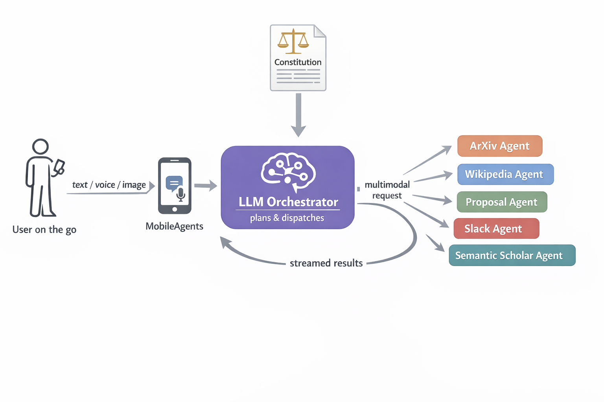
2. System Design and Implementation
2.1 Prototype Overview
MobileAgents is a functional open-source application built with FastAPI, React, PostgreSQL, and CrewAI for agent orchestration. It features five specialised worker agents: ArXiv (paper search & summarisation), Wikipedia (background research), Proposal (research proposal generation), Slack (message delivery), and Semantic Scholar (citation analysis). All system prompts are available in the paper appendix for reproducibility.
2.2 Input Modalities
We implement mobility (V1) through three input modalities. Text is the baseline modality, sent via a standard conversational interface. Voice enables hands-free control via push-to-talk. Images allow capturing physical context (e.g., a whiteboard photograph) using the phone camera.
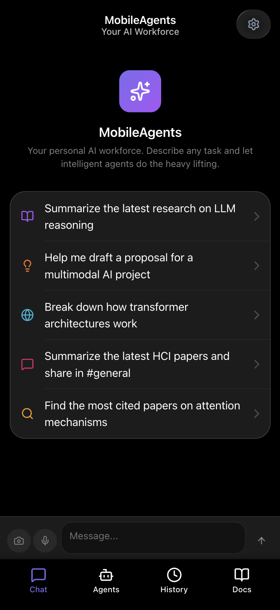
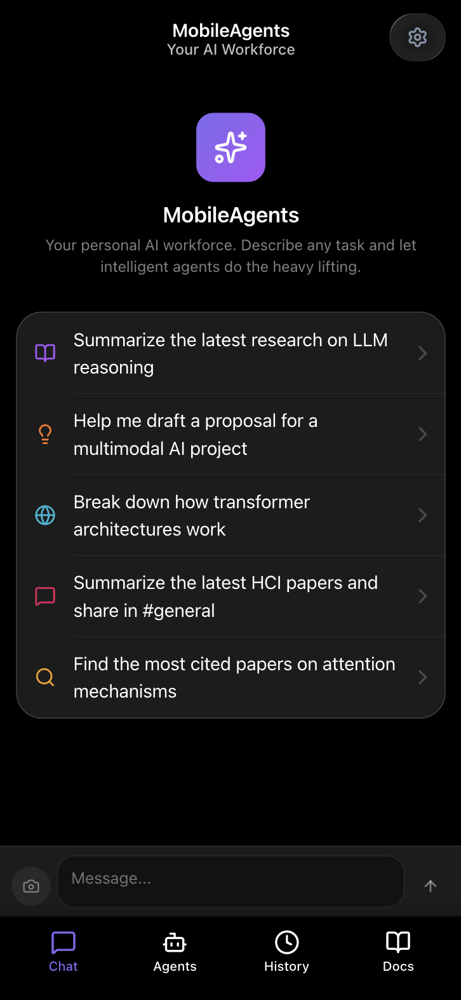
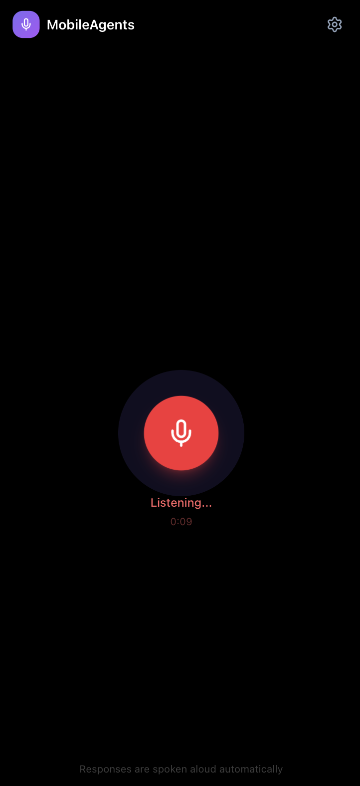
Figure 2: The three input modes. (a) Multimodal with text, voice, and camera. (b) Text + Images only. (c) Voice-only with push-to-talk.
2.3 Transparency Configurations
We support control (V2) through three transparency modes, guided by established frameworks on levels of automation [Parasuraman et al., 2000]:
| Configuration | What the user sees and can do |
|---|---|
| C1: Black Box | Agents auto-execute with full autonomy. |
| C2: Plan Preview | Approve the orchestrator’s task plan before execution. |
| C3: Transparency | Plan approval with a real-time execution graph showing live progress. |
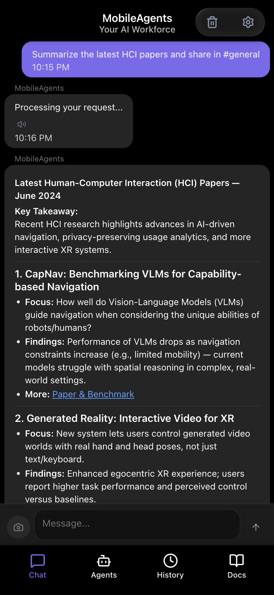
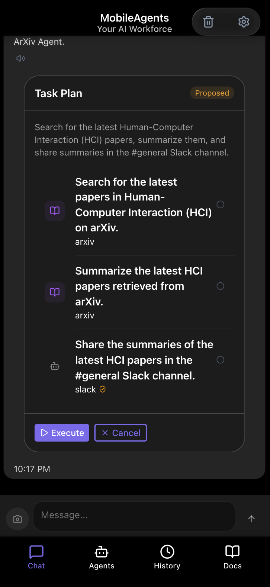
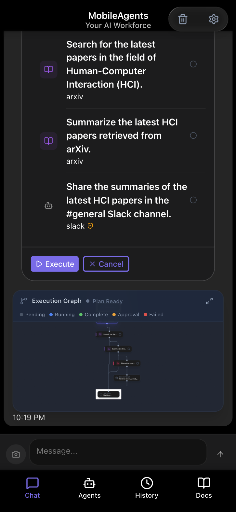
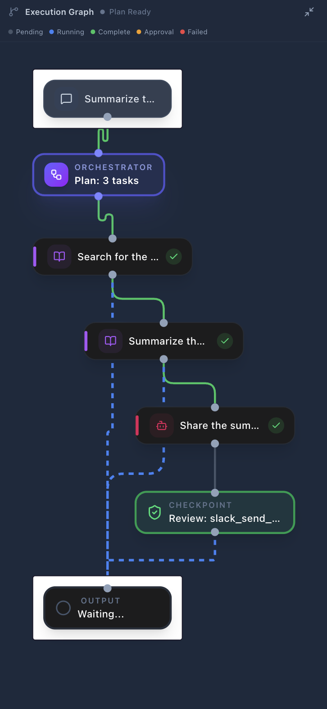
Figure 3: Transparency configurations. (a) Black box — agents auto-execute. (b) Plan preview — approve before running. (c) Full transparency — plan + live graph. (d) The real-time execution DAG with status indicators.
Advanced control is available through agent on/off toggles and a natural-language constitution (inspired by Anthropic’s Constitutional AI [Bai et al., 2022]) that guides orchestration policy and output stylization.
2.4 Agent Management and Settings
We address ease (V3) through simple settings and the agent management tab. Users can toggle agents on/off, inspect each agent’s goal, tools, and system prompt, and edit the orchestrator’s constitution. The app supports four languages, light/dark themes, and includes in-app documentation.
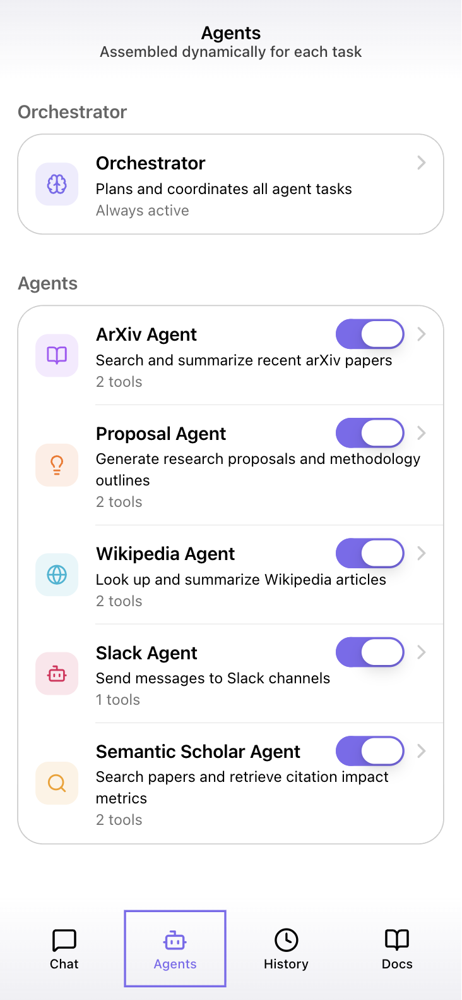
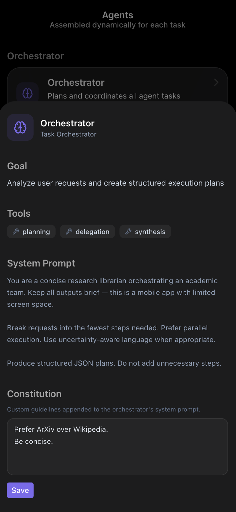
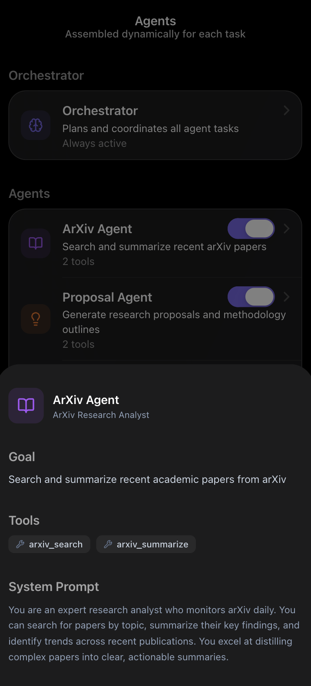
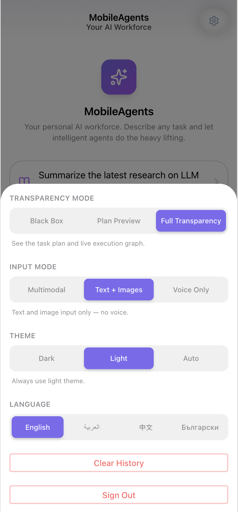
Figure 4: Agent management and settings. (a) Agent list with enable/disable toggles. (b) Orchestrator detail with editable constitution. (c) Worker agent card showing goal, tools, and backstory. (d) Settings with transparency, modality, theme, and language controls.
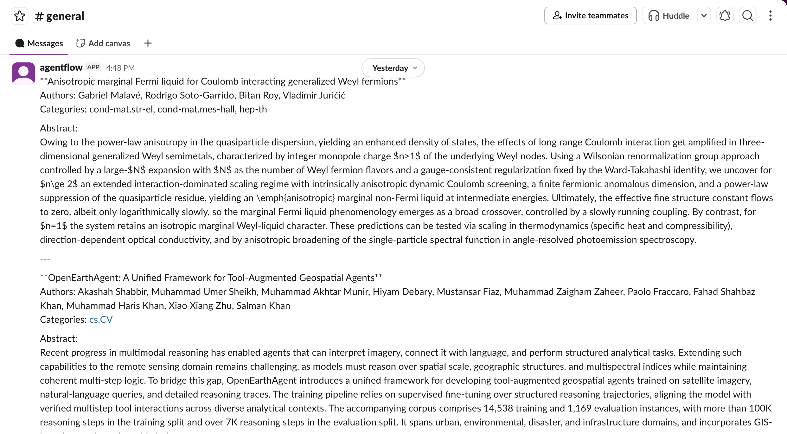
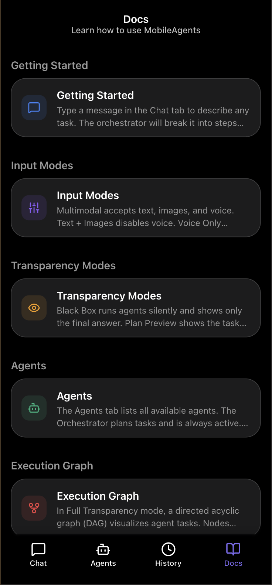
3. Research Questions and Evaluation
3.1 Research Questions
- RQ1: Is there a perceived usability/control tradeoff between black box, plan, and transparency?
- RQ2: Does the support of multiple modalities improve the mobile-first experience?
- RQ3: Are users able to guide orchestration behavior through the advanced agent controls?
3.2 Study Design
Phase 1 — Control (RQ1). Participants complete the same research task (find recent HCI papers and distribute via Slack) under all three control configurations in counterbalanced order.
Phase 2 — Modality (RQ2). Each participant completes a fixed multi-step workflow using all three modalities — (M1) Multimodal, (M2) Text + Images, (M3) Voice-only — in counterbalanced order. All runs use black-box mode, so modality is the only variable.
Phase 3 — Orchestration (RQ3). Participants configure the system so that it never sends Slack messages without showing a draft first, and remove agents they do not want. This exploratory session tests whether the constitution and toggles can be located, understood, and utilized.
3.3 Participants and Metrics
We recruited 13 volunteers with experience in LLM-based tools. Phase 1 uses 7-point Likert scales for trust, control, and satisfaction. Phase 2 uses the NASA Task Load Index [Hart and Staveland, 1988] and Single Ease Question (SEQ) [Sauro and Dumas, 2009]. Phase 3 uses a 3-item perceived controllability scale and semi-structured interviews.
4. Results
4.1 RQ1: Control — Transparency Increases Trust and Control
| Metric | C1: Black Box | C2: Plan | C3: Transparency |
|---|---|---|---|
| Trust | 4.3 (1.7) | 5.0 (1.5) | 5.8 (1.0) |
| Control | 3.2 (2.1) | 5.4 (1.3) | 5.7 (1.1) |
| Satisfaction | 4.4 (2.3) | 3.9 (1.1) | 5.8 (1.1) |
Trust and control increase monotonically from C1 to C3. C3 scores highest in satisfaction (5.8), whereas C2 performs the worst (3.9), indicating that users preferred either full autonomy or high control. Post-hoc pairwise Wilcoxon signed-rank tests (Bonferroni-corrected, k=3) confirm significant improvements in control for C2 and C3 over C1, and significant satisfaction gains for C3 over C2.
| Metric | Pair | W | pbon | d |
|---|---|---|---|---|
| Control | C1–C2 | 6.0 | 0.041* | −0.88 |
| Control | C1–C3 | 3.0 | 0.012* | −1.03 |
| Control | C2–C3 | 26.5 | 1.000 | −0.16 |
| Satisfaction | C2–C3 | 2.0 | 0.012* | −1.16 |
4.2 RQ2: Modality — Complementary Input Modes
| Metric | M1: Multimodal | M2: Text + Image | M3: Voice-only |
|---|---|---|---|
| SEQ (ease) | 4.2 (2.0) | 4.5 (2.1) | 5.4 (1.6) |
| TLX composite | 4.2 (0.6) | 4.1 (0.9) | 4.6 (0.6) |
| Felt natural | 4.2 (1.1) | 4.9 (1.7) | 4.1 (2.0) |
| OK in public | 4.0 (1.6) | 3.3 (1.4) | 2.8 (1.3) |
No single modality dominates. Voice scored highest on ease (5.4) but also highest on cognitive load (TLX 4.6) and lowest on public appropriateness (2.8). Text + Image felt most natural (4.9). Multimodal scored best for public use (4.0). The modalities are complementary and all kept in the settings.
4.3 RQ3: Orchestration — Customisation Perceived as Effective
A one-sample Wilcoxon showed controllability (p = .001), effectiveness (p = .016), and ownership (p = .036) were significantly above neutral. Discoverability (p = .545) and adoption (p = .717) did not differ from neutral, suggesting the constitution is difficult to find and use. The most trusted feature was the execution graph, and the most important missing feature was an undo functionality.
4.4 Qualitative Assessment
Intervention is powerful with high observability. Participants valued the ability to act while observing real-time execution. One noted: “The graph reveals wrong directions as they begin.” This is especially needed for tasks involving irreversible actions like sending Slack messages.
Multimodal enables mobile. Participants strongly valued voice for on-the-go use but refused to use it in public spaces, consistent with past research [Porcheron et al., 2018]. They reported images as useful for quickly capturing notes. Text remains the standard for sensitive tasks.
5. Discussion and Future Work
Ethical, Social, and Value-Related Reflection
Privacy and Security. A centralized agent manager introduces risks of data storage and prompt injection [Greshake et al., 2023] by malicious agents. Future work should integrate guardrails and safety mechanisms to prevent adversarial attacks.
Ethics. This application may promote unhealthy habits and work exploitation using smartphones [Derks and Bakker, 2014], [Fujimoto et al., 2016]. Furthermore, we are concerned about potential cognitive offloading [Gerlich, 2025]. Future work should research the impact of MobileAgents on human wellbeing.
Inclusivity and Access. MobileAgents supports multiple languages and themes. We aim to lower the technical barrier by providing an interface that connects external agents through MCP [Anthropic, 2024] and APIs.
Limitations
Our participants are all university students with LLM experience, which does not reflect the full target population. The single research task in Phase 1 may not generalize to other agentic workflows such as code execution or data analysis. Finally, the low statistical power (N = 13) is insufficient for conclusive results.
Conclusion
We designed a mobile agent management platform balancing automation, control, and usability. Our evaluation explores the tension between control and efficiency through oversight and multimodality. We show that different use cases benefit from different levels of control and that modalities are complementary. Based on this, we release a highly customizable open-source system targeted at technical users and propose future directions grounded in ethics.
References
- [Anthropic, 2024] Anthropic. Introducing the Model Context Protocol. 2024. anthropic.com.
- [Bai et al., 2022] Yuntao Bai, Saurav Kadavath, et al. Constitutional AI: Harmlessness from AI Feedback. 2022. arXiv:2212.08073.
- [Derks and Bakker, 2014] Daantje Derks and Arnold B. Bakker. Smartphone Use, Work–Home Interference, and Burnout: A Diary Study. Applied Psychology, 63(3), 411–440, 2014.
- [Friedman et al., 2002] Batya Friedman, Peter Kahn, and Alan Borning. Value Sensitive Design: Theory and Methods. 2002. UW-CSE-02-12-01.
- [Fujimoto et al., 2016] Yuka Fujimoto et al. The effect of mobile technology usage on work engagement and emotional exhaustion in Japan. Journal of Business Research, 69(9), 3315–3323, 2016.
- [Gerlich, 2025] Michael Gerlich. AI tools in society: Impacts on cognitive offloading and the future of critical thinking. Societies, 15(1), 2025. doi:10.3390/soc15010006.
- [Greshake et al., 2023] Kai Greshake, Sahar Abdelnabi, et al. Not What You’ve Signed Up For: Compromising Real-World LLM-Integrated Applications with Indirect Prompt Injection. In AISec ’23, ACM, 2023. doi:10.1145/3605764.3623985.
- [Guo et al., 2024] Taicheng Guo, Xiuying Chen, et al. Large Language Model based Multi-Agent: A Survey of Progress and Challenges. 2024. arXiv:2402.01680.
- [Hart and Staveland, 1988] Sandra G. Hart and Lowell E. Staveland. Development of NASA-TLX (Task Load Index). In Human Mental Workload, North-Holland, 139–183, 1988.
- [Kim et al., 2025] Yubin Kim, Ken Gu, et al. Towards a Science of Scaling Agent Systems. 2025. arXiv:2512.08296.
- [OpenClaw, 2026] OpenClaw — Personal AI Assistant. 2026. openclaw.ai.
- [Parasuraman et al., 2000] R. Parasuraman, T. B. Sheridan, and C. D. Wickens. A model for types and levels of human interaction with automation. Trans. Sys. Man Cyber. Part A, 30(3), 286–297, 2000.
- [Porcheron et al., 2018] Martin Porcheron, Joel E. Fischer, Stuart Reeves, and Sarah Sharples. Voice Interfaces in Everyday Life. In CHI ’18, ACM, 1–12, 2018. doi:10.1145/3173574.3174214.
- [Sauro and Dumas, 2009] Jeff Sauro and Joseph S. Dumas. Comparison of three one-question, post-task usability questionnaires. In CHI ’09, ACM, 1599–1608, 2009.
- [Shneiderman, 2020] Ben Shneiderman. Human-Centered Artificial Intelligence: Reliable, Safe, Trustworthy. 2020. arXiv:2002.04087.
- [Stauder et al., 2026] Leon Stauder, Kevin Feng, et al. The 2025 AI Agent Index: Documenting Technical and Safety Features of Deployed Agentic AI Systems. 2026. arXiv:2602.17753.